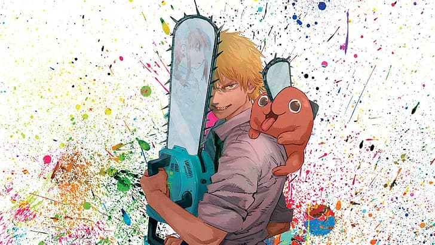

Quiz sobre CSM!

1. Qual é o nome do primeiro demônio que Denji derrota?
Demônio do morcego
Demônio da cobra
Demônio da lombriga
Demônio do tomate
2. Qual é o nome da possessa de sangue?
Power
Makima
Himeno
Kobeni
3. Qual é o demônio que Aki possui um contrato?
Demônio da Raposa
Demônio do Morcego
Demônio da Arma
Demônio do controle
4. No arco do Hotel infinito, um desses personagens surta e quase mata Denji. Qual deles faz isso?
Makima
Power
Aki
Kobeni
5. Qual é o nome da garota que apresenta coisas novas para Denji?
Reze
Asa
Yoko
Mitsuha
6. Essa garota escondia algo. O que era?
Que ela era apaixonada por Denji
Que ela odiava Denji
Que ela era a possessa da bomba
Que ela trabalhava para Makima
7. Como ela faz essa revelação?
Falando para ele diretamente
Com um bilhete
Com um beijo
Não revela
8. Quem é Makima, realmente?
A Demônio do Controle
A presidente do Japão
A mãe de Denji
A irmã de Denji
9. Quais das coisas a seguir Makima NÃO fez?
Transformar Aki no possesso da arma
Matar Power
Arrancar o coração de Denji
Controlar todos
10. Como Denji a derrota?
Trocando de lugar com Pochita e a cortando com uma motosserra
Enfiando uma espada em seu peito
Não derrota
Salvando seus amigos e apenas daí derrotando-a com a ajuda deles
Enviar Respostas